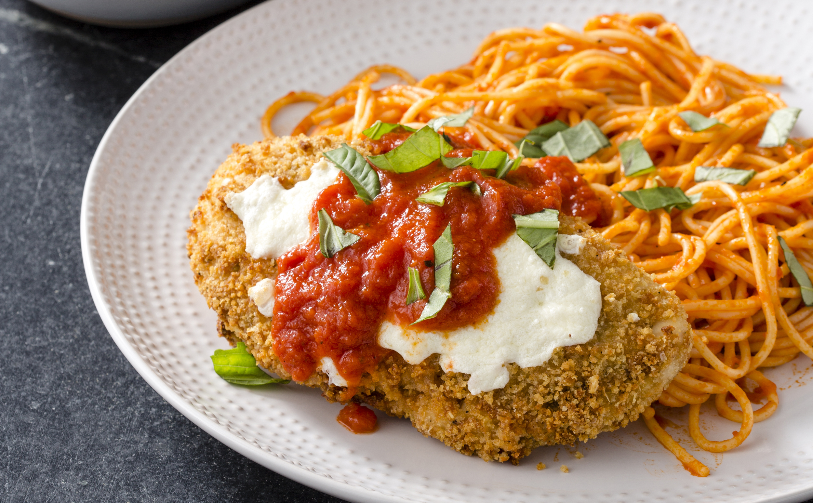
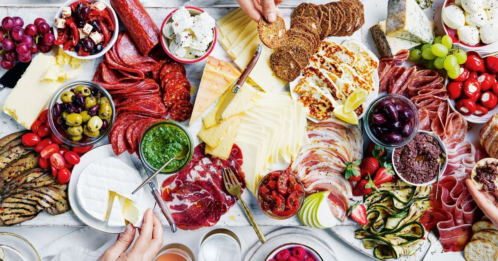
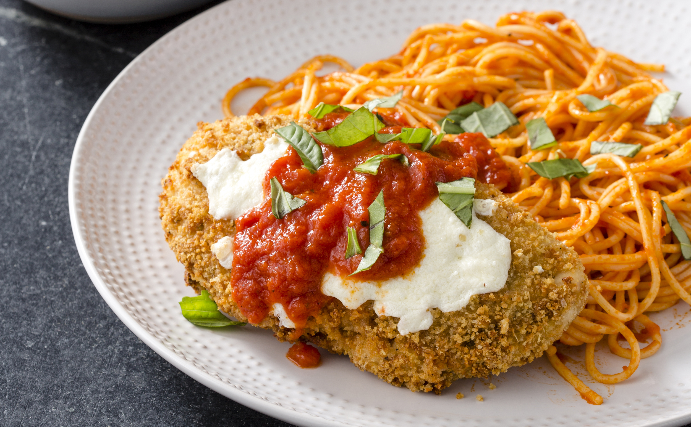
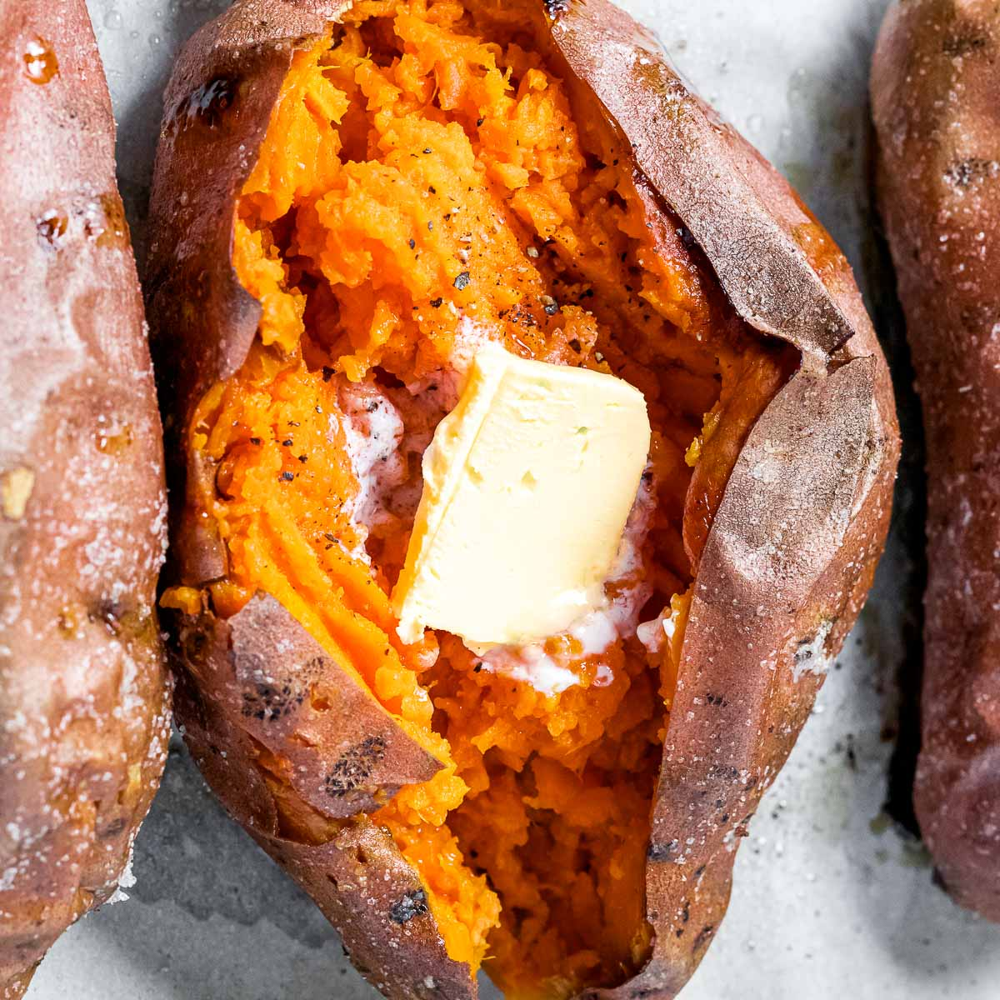
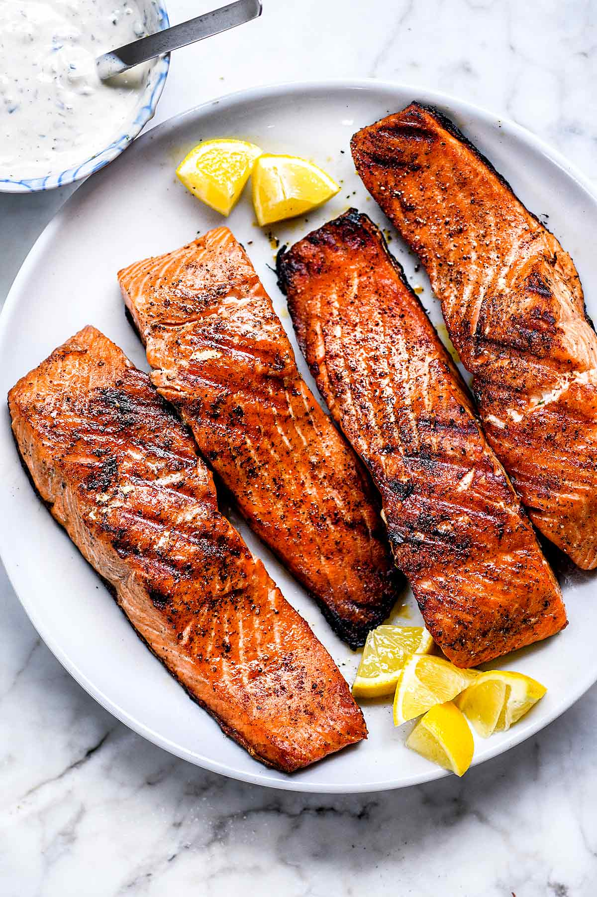

Number 5: Chicken Parmesean
A good chicken parm beats the vast majority of foods. Decievingly simple. Crispy chicken breast, spaghetti noodles, creamy melted cheese, and some sweet and savory marinara sauce!
There are countless foods in the world and it is almost impossible for me to even pick my top 5! But, here we go! Some are going to be very basic while others will be entire dishes. This is a completely subjective list!!!
A good chicken parm beats the vast majority of foods. Decievingly simple. Crispy chicken breast, spaghetti noodles, creamy melted cheese, and some sweet and savory marinara sauce!
A soft baked sweet potato is such an awesome food especially when paired with a little bit of cinammon or brown sugar butter. It can a savory dessert and I cannot pass one up no matter the circumstance. I will make room!
I know a lot of people don't really like fish... stay away from them. Grilled salmon is so tasty especially on a bed of rice with some lemon. You have got to get that skin crispy though! Oherwise, that's gonna be a soggy mess. Also, what is wrong with you? Eat the skin pansy.
Piella is a very popular spanish rice dish that usually contains a mix of seafood and chicken. Mussels, shrimp, and scallops mixed with some chicken is my favorite way to eat this. It is sort of difficult to cook because you wanna make sure you get some crispy rice on the bottom. That stuff is delicious. However, the extra work is worth it because of how filling and tasteful Piella is!

Alright, I know steak being a favorite food is so basic but it is so rich and diverse. It is a great base for a meal and goes with almost any side. I usually eat it plain, dip it in mashed potatoes, or use a little bit of steak sauce. It's just so tasty and great for your health.